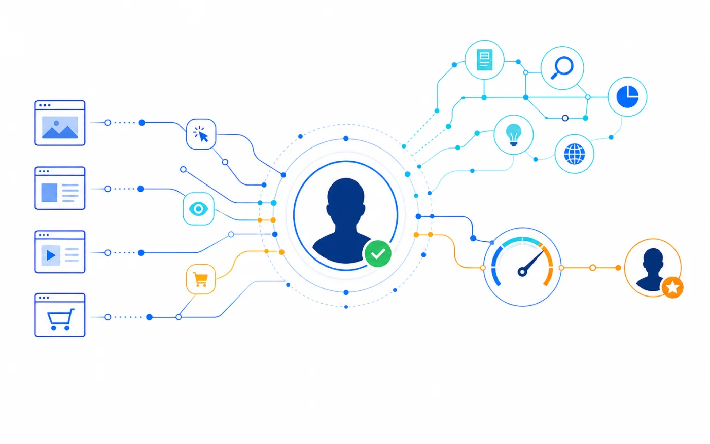
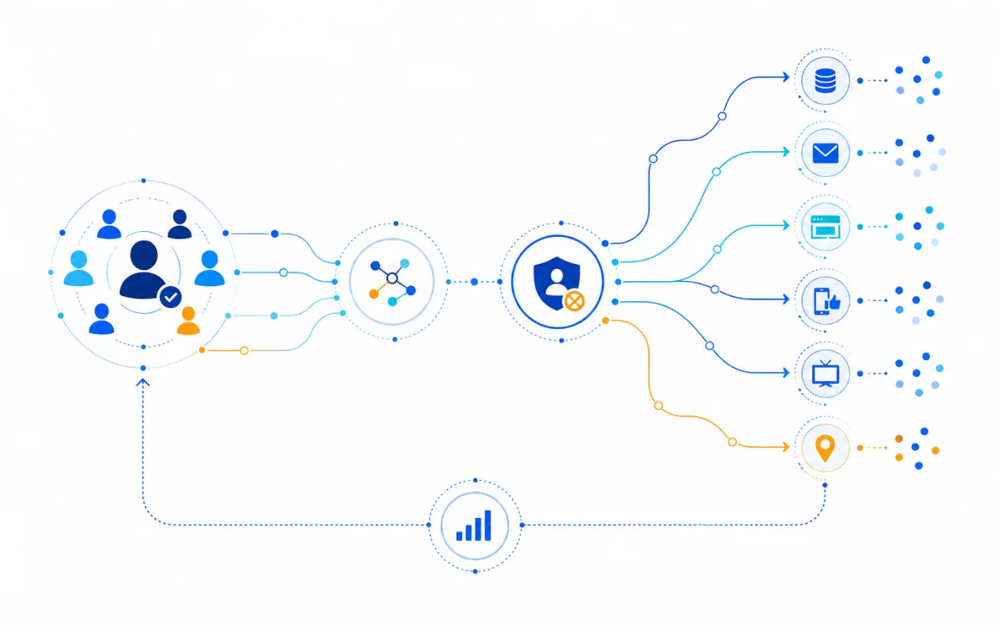

From Anonymous Traffic to Named Pipeline
Design a person-level identity workflow that gives sales context without flooding the CRM.
Read guideMyProspects resources
Practical field guides for resolving demand, interpreting intent, and activating known audiences across the buyer journey.
Featured guide
From anonymous traffic to named pipelineA step-by-step operating model for turning website signals into a responsible sales and marketing workflow.
Read the guideResource library
Design a person-level identity workflow that gives sales context without flooding the CRM.
Read guide
Combine what a person does on your site with what they research elsewhere.
Read guide
Coordinate CRM, lifecycle, media, and one-to-one marketing from one audience definition.
Read guideTest identity and activation on your own traffic.